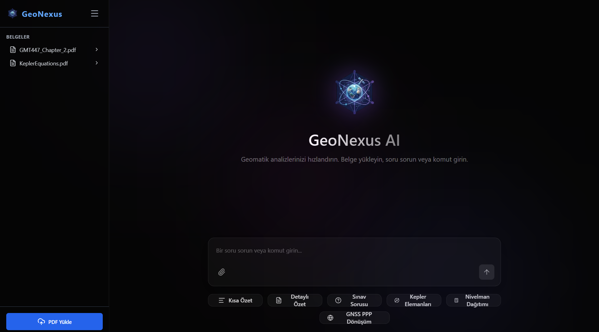
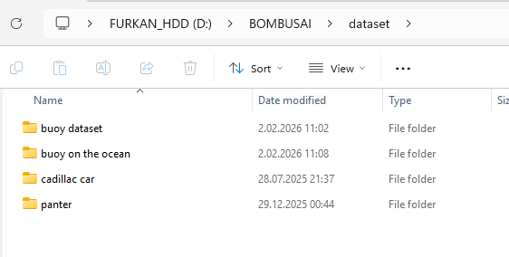
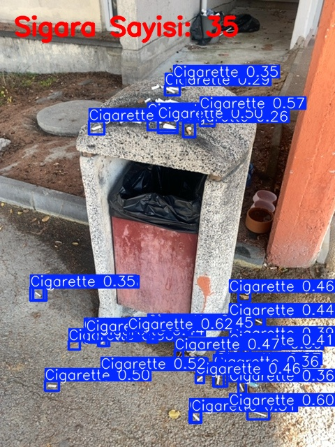

My Projects

GeoNexus AI
An advanced application integrating local Large Language Models with Retrieval Augmented Generation architectures.
It processes uploaded PDFs to automatically extract document outlines, categorizes topics, and generates specialized AI driven explanations for each subject area.

Cat Counter App
A web application built to demonstrate my end-to-end model training and deployment skills with a user friendly interface.
Users upload videos or images, and the custom trained model detects and tracks cats frame by frame. It intelligently handles occlusions, incrementing the total count whenever a new cat enters the frame without duplicate counting.

Dataset Downloader
A high performance data pipeline script built to drastically accelerate the dataset preparation phase for deep learning models.
By taking a keyword and image count limit from the user, it rapidly scrapes and downloads top high resolution images directly from Google into a designated folder in seconds, with zero quality loss.

Cigarette Butt Detection AI
Developed for a class assignment to ensure fair evaluation, this project features a custom trained model that detects and counts cigarette butts in user-uploaded photos.
The system links detections to user IDs and calculates a reliability score by dividing the total detected items by the number of uploads. Users reporting larger piles achieve higher scores, enabling evaluators to objectively verify their reporting accuracy.